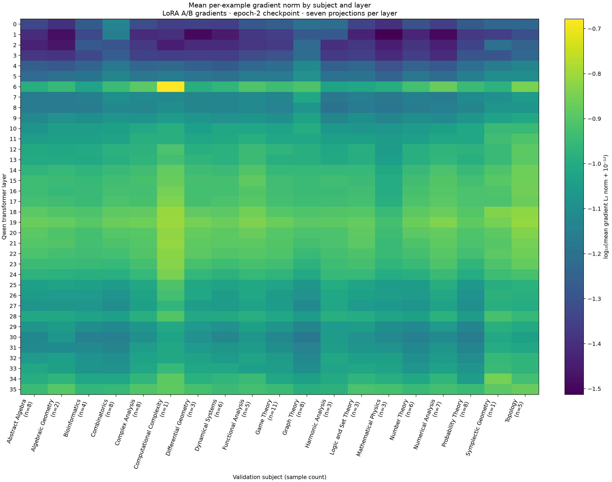
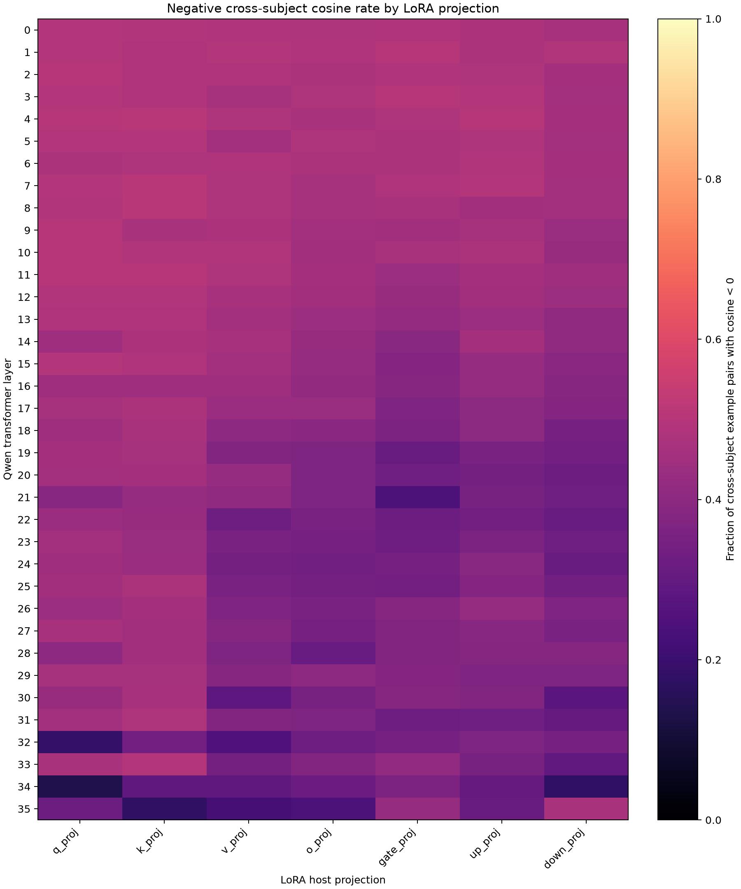
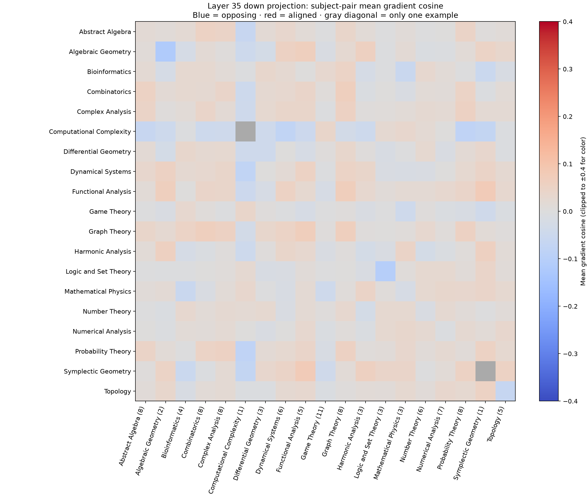
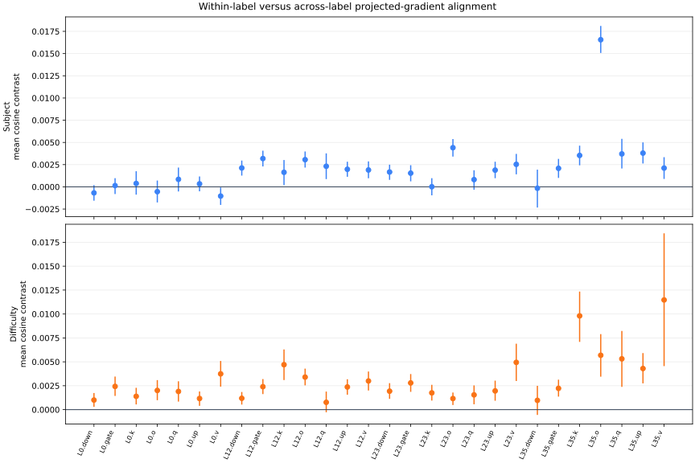
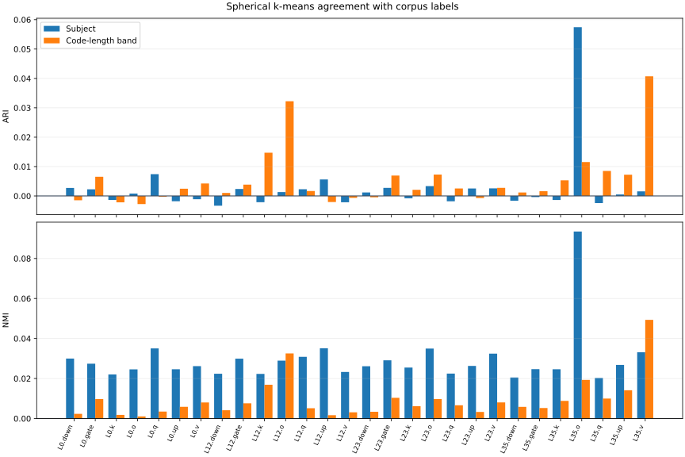

Investigating the Emergence of Specialized Adapters for Text-to-Manim Generation
Abstract
Negative gradient cosines were common in 100 held-out examples. Projected gradients from 481 training examples were compared with subject and code-length labels across 28 LoRA modules.
The largest adjusted Rand index was 0.057 for subject and 0.041 for code length. Neither label produced a clear specialized partition under the measured conditions.
1. Introduction
Text-to-Manim generation maps a lesson request to a Python program that expresses mathematical content through an animation.
D-MoLE provided the starting point for this investigation. Its experts are allocated and routed layer by layer during continual multimodal instruction tuning.1
That design motivated a test of whether text-to-Manim gradients contain stable groups that could justify separate adapters.
Subject and target-code length were evaluated as possible group boundaries. Three earlier adapters had been assigned through an oracle label, so their existence did not demonstrate learned specialization.
3. Methodology
Dataset and labels
The prepared Bespoke-Manim corpus contains 995 prompt-program pairs from the pinned dataset revision.4 Rows were retained when python_code was present and the dataset contained no recorded error.
Mathematical correctness and renderability were outside that filter.
The corpus contains 23 subject labels. Target Python line count was split into tertiles: 336 foundational, 332 intermediate, and 327 advanced examples.
These bands form a code-length difficulty proxy.
Line count also changes with formatting and animation verbosity.
Fixed specialists and the shared probe
Three rank-16 LoRA checkpoints were first trained, one for each code-length band. The known band supplied the oracle route.
The shared probe used rank 16, alpha 32, dropout 0.05, and seven projection types on a 4-bit-loaded Qwen3-4B-Instruct checkpoint. Loss was applied to assistant code tokens. Complete prompt-plus-code sequences were limited to 3,072 tokens.
Gradients were measured at step 1,790.
- Exact held-out gradients: unprojected LoRA A/B gradients from 100 validation examples and 19 subjects. Gradients were concatenated within 252 modules across 36 layers.
- Projected training signatures: 256-dimensional signatures from 481 training examples and 8 subjects. Seven projection types were recorded at layers 0, 12, 23, and 35, giving 28 modules.
Gradient conflict
For example i and LoRA module m, the gradient was defined with respect to the trainable parameters of that module:
Pairwise cosine similarity measures whether two examples point toward similar local updates. A pair was counted as conflicting when the cosine was negative:
This statistic describes a local pairwise relationship. Adapter specialization requires stable groups under repeated measurement.
Tests of label structure
Let z denote a normalized, nonzero projected signature and y its label. The same-label set excludes the record itself. The different-label set contains every retained record with another label:
For each retained record, mean projected cosine to the same-label set was compared with mean projected cosine to the different-label set:
The standardized pair-mean difference uses sqrt((variance within + variance across) / 2) as its denominator. The value is descriptive because many pairs share the same record.
Record contrasts were resampled 2,000 times for descriptive intervals. Labels were shuffled 2,000 times with group sizes held fixed.
Benjamini-Hochberg and Bonferroni corrections were applied separately to the 28 tests for each label system.5
Spherical k-means was then fitted per module with eight clusters for subject and three for code length. Ten initializations were used.
Agreement was measured with adjusted Rand index (ARI) and normalized mutual information (NMI), with shuffled labels providing chance baselines.6
4. Experiments
| Evidence view | Examples | Labels represented | Modules | Role |
|---|---|---|---|---|
| Exact held-out LoRA gradients | 100 validation | 19 subjects | 252 | Measure conflict prevalence |
| Projected signatures | 481 training | 8 subjects; 3 proxy bands | 28 | Test label association and clustering |
The exact analysis contains 4,665 unique cross-subject pairs per module. The projected analysis contains 115,440 unique pairs per module.
Subject labels produce 14,621 within-label pairs and 100,819 cross-label pairs. Code-length labels produce 38,356 within-band pairs and 77,084 cross-band pairs.
5. Results
Gradient norms by subject
Gradient norms varied strongly by transformer layer. The broad layer pattern was repeated across the 19 held-out subjects. Several columns contain few examples, so small subject-level differences should be treated cautiously.

Cross-subject gradient conflict
Across 252 exact-gradient modules, 13.9% to 50.8% of cross-subject pairs had negative cosine. Each module contains 4,665 unique cross-subject pairs.
Layer-aggregated rates ranged from 15.6% to 48.8% across 36 layers.
The distribution changed across layers and projection types. No single subject partition follows from that frequency alone.


layer_35.down_proj. Blue cells indicate opposing mean directions and red cells indicate aligned directions. This module was selected after exploratory inspection. Several subjects have fewer than five examples.Within-label gradient alignment
For subject labels, the median per-record cosine contrast across 28 modules was 0.0019, with a range from −0.0010 to 0.0166.
17 of 28 modules had a Benjamini–Hochberg q-value at or below 0.05, and 11 of 28 survived Bonferroni correction.
The standardized pair-mean differences had a median of 0.025 and a maximum of 0.174.
The code-length proxy produced a median contrast of 0.0023 and a range from 0.0008 to 0.0115.
26 of 28 modules met the q ≤ 0.05 threshold, and 18 of 28 survived Bonferroni correction.
Its standardized differences had a median of 0.033 and a maximum of 0.085.
Each permutation reshuffles 481 record labels. The 115,440 pairwise terms reuse those records, violating independence. Significance here describes the frozen checkpoint under its label-shuffle test.
Reproducibility across runs remains unmeasured.

Clustering against declared labels
Subject ARI ranged from −0.003 to 0.057; subject NMI ranged from 0.020 to 0.093.
Code-length ARI ranged from −0.003 to 0.041; NMI ranged from 0.001 to 0.049.
Some modules exceeded shuffled-label baselines. Their absolute agreement remained low, and the fitted clusters contained substantial mixing of both label systems.

6. Discussion
The evaluated partitions had little agreement with subject or code-length labels. This checkpoint supplies little support for spawning adapters from either label system.
The original hypothesis treated dataset labels as possible task boundaries. Subject labels describe mathematical content. Every example still asks for a runnable visual program.
Code length is closer to output structure, which may explain its stronger permutation results. Its three labels still remain mixed within the fitted clusters.
Negative cosine reveals local competition between examples. An adapter-spawning rule would require persistence across checkpoints and seeds, followed by a measured benefit from routing.
Conflict frequency alone supplies none of that evidence.
7. Limitations
The projected stream covers 481 of 895 training examples and 8 of 23 subjects. The exact view covers 19 subjects, with as few as one example in some groups.
Code-length bands are derived from the target program, so a new prompt has no observed band at inference time. They can also capture formatting and animation verbosity.
The fixed specialists used a different base checkpoint and evaluation contract, preventing a controlled comparison with the shared adapter.
Clustering was evaluated at one checkpoint with one projection seed. Preservation of exact cosine or cluster structure by the 256-dimensional signed-hash projection was not measured.
Only aggregate exact-gradient statistics survived, so preservation of exact cosine by the signed-hash projection cannot be recovered from the available artifact.
Layer 35 was selected after exploratory visualization. Rendered-video quality and downstream routing gains remain unmeasured.
8. Conclusion
D-MoLE motivated a search for adapter groups inside text-to-Manim training dynamics. Subject and code-length labels left measurable traces in the projected gradients. The fitted partitions showed little agreement with either label system.
Specialized adapters remain a hypothesis for a controlled routing experiment. Exact gradients should be collected across checkpoints and seeds. Any stable partition should then be tested on held-out program generation and rendering.
References
- Ge, C. et al. (2025). Dynamic Mixture of Curriculum LoRA Experts for Continual Multimodal Instruction Tuning. ICML, PMLR 267.
- Hu, E. J. et al. (2021). LoRA: Low-Rank Adaptation of Large Language Models. arXiv:2106.09685.
- Yu, T. et al. (2020). Gradient Surgery for Multi-Task Learning. NeurIPS 33.
- Bespoke Labs. Bespoke-Manim dataset, revision
4542ab8b32483c30d1772946dacae2ad1ae9274c. - Benjamini, Y. and Hochberg, Y. (1995). Controlling the False Discovery Rate: A Practical and Powerful Approach to Multiple Testing. JRSS B, 57(1), 289–300.
- Hubert, L. and Arabie, P. (1985). Comparing Partitions. Journal of Classification, 2, 193–218.